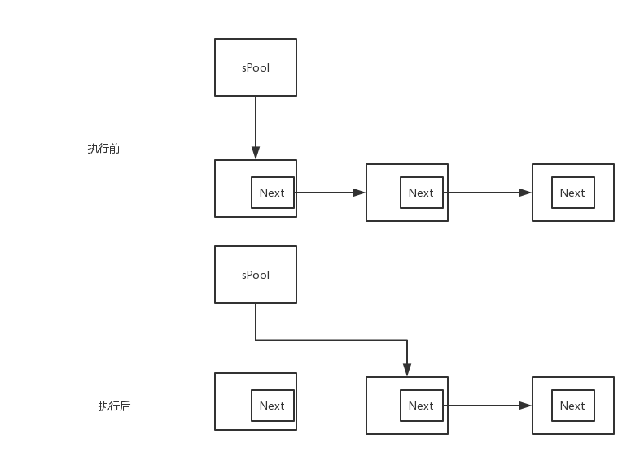
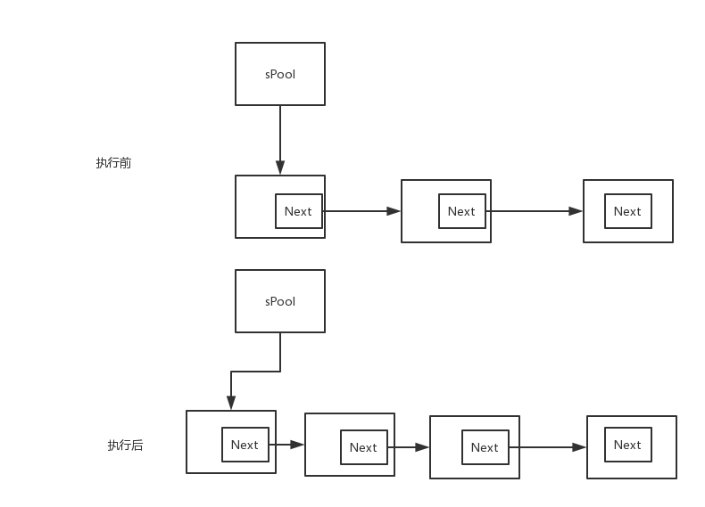

本篇将从Handler相关的各个类源码来分析，解读Handler机制
Message
JDK注释
定义了Message类：带有描述和任意的数据对象，可以发送给Handler进行处理。
Message包含了2个额外的int成员和一个Object成员，从而允许使用的时候满足各种各样的case。
虽然Message的构造方法是public的，但是建议使用Handler.obtainMessage()和Message.obtain()，这样可以使Message循环使用。
成员变量
- int what
一个识别代码，用于接收消息时区分该消息，以确定应该做何处理。 - Bundle data
可以存一些复杂的数据，按我理解也是用来确定消息的。 - int arg1, arg2
arg1和arg2可以是data的一个替代，如果只需要存几个int值，what，arg1，arg2就够用了。 - Object obj
不能存在Bundle里的，可以存在Obj里。 - Handler target
- Runnable callback
- Message next
指向下个Message - Message sPool
这是个static的成员， 指向的是当前Message小结
从成员变量就可以看出，Message本身就是个单向链表结构，sPool指向当前节点，next指向下个节点。
构造方法
1 | public Message() { |
重要的api
- obtain
obtain有一系列的重载方法，其作用是从链表中取出一条Message（sPool），然后sPool = next，除了obtain(Message orig)这个方法是从orig中拷贝。1
2
3
4
5
6
7
8
9
10
11
12
13public static Message obtain() {
synchronized (sPoolSync) {
if (sPool != null) {
Message m = sPool;
sPool = m.next;
m.next = null;
m.flags = 0; // clear in-use flag
sPoolSize--;
return m;
}
}
return new Message();
}

- recycle()
1
2
3
4
5
6
7
8
9
10
11
12
13
14
15
16
17
18
19
20
21
22
23
24
25
26
27
28
29
30
31public void recycle() {
if (isInUse()) {
if (gCheckRecycle) {
throw new IllegalStateException("");
}
return;
}
recycleUnchecked();
}
void recycleUnchecked() {
//初始化各成员变量
flags = FLAG_IN_USE;
what = 0;
arg1 = 0;
arg2 = 0;
obj = null;
replyTo = null;
sendingUid = -1;
when = 0;
target = null;
callback = null;
data = null;
synchronized (sPoolSync) {
if (sPoolSize < MAX_POOL_SIZE) {
next = sPool;
sPool = this;
sPoolSize++;
}
}
}
其执行结果是把当前Message插入到链表的头部。如图：

- sendToTarget
这个方法非常短，它仅仅只是调用Handler把当前消息发出去了。1
2
3public void sendToTarget() {
target.sendMessage(this);
}
这个方法的存在，可以让我们免去 msg.getTarget().sendMessage(msg)这样的别扭操作。
MessageQueue
JDK注释
MessageQueue保存Looper"处理过"的Message。
这些Message不是直接添加进MessageQueue的，
而是通过Looper对应的Handler放进MessageQueue的。
可以调用Looper.myQueue()得到MessageQueue。
构造方法
1 | MessageQueue(boolean quitAllowed) { |
MessageQueue这个类，连构方法都不是public的。其中nativeInit()是个本地方法
其它
我看了下MessageQueue这个类，并没有让我觉得很重要的方法。
这一块先搁置在这里吧。
感觉消息队列里边怎么运行的，不是一言半语讲完的，也不是一眼源代码能看完的。
Looper
JDK注释
Looper是用于线程运行消息循环的类。
默认情况下线程没有与之对应的消息循环，
在线程中调用prepare()方法可以创建一个消息循环。然后调用loop()方法使之运行起来。
典型的使用例子如下：
1 | class LooperThread extends Thread { |
成员变量
- static final ThreadLocal
sThreadLocal - static Looper sMainLooper
- MessageQueue mQueue
- Thread mThread
构造方法
1 | private Looper(boolean quitAllowed) { |
构造方法中初始化了它的两个重要成员变量。值得注意的是这个构造方法是private的。
重要的api
从光Looper的注释看，prepare()和loop()这两个方法肯定是够重要的了。
- prepare()
1
2
3
4
5
6
7
8
9
10
11public static void prepare() {
prepare(true);
}
private static void prepare(boolean quitAllowed) {
if (sThreadLocal.get() != null) {
throw new RuntimeException("Only one Looper may be
created per thread");
}
sThreadLocal.set(new Looper(quitAllowed));
}
prepare()是Looper的初始化工作，它把Looper的实例传给ThreadLocal。
其中有个判断很有趣：1
2
3if (sThreadLocal.get() != null) {
throw new RuntimeException("Only one Looper may be created per thread");
}
这个判断保证了每个线程都只能有一个Looper。
因为多次调用prepare()必会抛出RuntimeException。
假设如果没有这个判断，一个线程可以有多个Looper，
那么自然MessageQueue也会有多个，那么Handler机制就完全混乱了。
- loop()
1
2
3
4
5
6
7
8
9
10
11
12
13
14
15
16
17
18public static void loop() {
final Looper me = myLooper();
if (me == null) {
throw new RuntimeException("No Looper; Looper.prepare() wasn't called on this thread.");
}
final MessageQueue queue = me.mQueue;
Binder.clearCallingIdentity();
final long ident = Binder.clearCallingIdentity();
for (;;) {
Message msg = queue.next();
if (msg == null) {
return;
}
msg.target.dispatchMessage(msg);
msg.recycleUnchecked();
}
}
myLooper()如下1
2
3public static Looper myLooper() {
return sThreadLocal.get();
}
sThreadLocal.get()没空时，会抛出RuntimeException，这就解释了为什么必须先调用Looper.prepare()。
接下去是一个死循环，
1.挨个取链表中的Message，交给Handler进行diapatchMessage(msg)，
2.将Message从链表中抹去。
3.直到所有Message都dispatch完，return。
提前看一下dispatchMessage()方法。1
2
3
4
5
6
7
8
9
10
11
12public void dispatchMessage(Message msg) {
if (msg.callback != null) {//
handleCallback(msg);
} else {
if (mCallback != null) {
if (mCallback.handleMessage(msg)) {
return;
}
}
handleMessage(msg);
}
}
1.如果Message本身的Runnable不为null，则执行Message本身的Runnable的run()方法；
2.Handler的Runnable不为null， 则执行Handler本身的Runnable的run()方法；
3.前2者都不满足，执行handleMessage()方法。
这里解释了为什么post()、sendMessage()都可以在子线程中完成UI操作。
Handler
JDK注释
Handler可以发送消息和Runnable对象到MessageQueue。
Handler、线程、MessageQueue是一一对应的。
每个创建出来的Handler实例都会绑定线程的MessageQueue，
Handler传递Message和Runnable，而负责MessageQueue执行。
Handler的两大用途是：
1、延时执行Message和Runnable
2、在另一个线程中执行Message和Runnable
成员变量
- MessageQueue mQueue
- Looper mLooper
- Callback mCallback
- boolean mAsynchronous
- IMessenger mMessenger
可以发送消息的API
- post (调用的sendMessageDelayed)
- postAtTime (调用的sendMessageAtTime)
- postDelayed (调用的sendMessageDelayed)
- sendMessageAtTime
- sendMessageDelayed （调用的是SendMessageAtTime）
- sendMessage （调用的sendMessageDelayed）
- sendEmptyMessageDelayed (调用的sendMessageDelayed)
- sendEmptyMessage （调用的sendEmptyMessageDelayed）
这么多API，最终调用的都是sendMessageAtTime。
1 | public boolean sendMessageAtTime(Message msg, long uptimeMillis) { |
最终调用的enqueueMessage()。
enqueueMessage
1 | private boolean enqueueMessage(MessageQueue queue, Message msg, long uptimeMillis) { |
1.设置Message的Target为this，即当前Handler是这条消息的处理者；
2.设置异步flag
3.将消息放到消息队列里